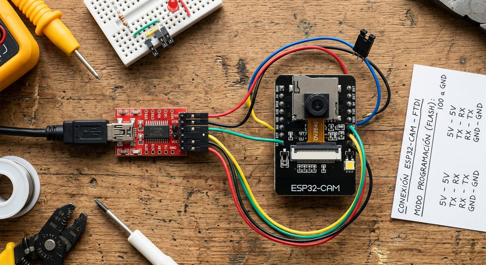

Qué cubre esta guía
La placa ESP32-CAM y sus pines
La ESP32-CAM es una placa ESP32 que integra una cámara OV2640 de 2 megapíxeles, un zócalo para tarjeta microSD y una antena WiFi, todo en un formato diminuto. Es el componente ideal para una cámara de vigilancia casera de bajo costo.
| Pin | Función |
|---|---|
| 5V / GND | Alimentación de la placa |
| U0R / U0T | Recepción y transmisión serial para programar |
| GPIO0 | Debe ir a GND para entrar en modo de programación |
| Flash LED (GPIO4) | LED de flash integrado para fotos |
Programar con el adaptador FTDI
FTDI ESP32-CAM
----- ---------
5V (o VCC) --> 5V
GND --> GND
TX --> U0R
RX --> U0T- Conecta el FTDI a la ESP32-CAM como indica el esquema.
- Une GPIO0 con GND (cable o jumper) para entrar en modo de programación.
- Presiona el botón reset de la placa.
- En el IDE de Arduino, selecciona la placa "AI Thinker ESP32-CAM" y carga el código.
- Retira el jumper de GPIO0 y presiona reset nuevamente para ejecutar el programa.
Capturar fotografías
El primer paso útil es capturar una fotografía y servirla por un navegador. El ejemplo CameraWebServer incluido en el núcleo ESP32 ya trae la base; para una foto simple, el patrón esencial es:
camera_fb_t *fb = esp_camera_fb_get(); // captura el frame
// ... usar fb->buf y fb->len (datos JPEG) ...
esp_camera_fb_return(fb); // libera el bufferEste patrón captura un frame, te da acceso al JPEG en el buffer y libera la memoria. Es la base sobre la que se construyen tanto la captura de fotos como el streaming y la detección de movimiento.
Servidor web de video streaming
El ejemplo CameraWebServer del núcleo ESP32 convierte la placa en un servidor web que transmite video en tiempo real a cualquier navegador de la red local. Su estructura es:
- El ESP32 se conecta a tu WiFi y obtiene una dirección IP local.
- Un servidor web responde a las peticiones del navegador.
- Una ruta de streaming envía los frames JPEG de forma continua, produciendo el video.
Para usarlo, carga el ejemplo, configura tus credenciales WiFi, abre la IP que imprime el monitor serie en el navegador y pulsa "Start Stream". Verás el video en vivo desde cualquier dispositivo de tu red local.
Configurar resolución y calidad
La cámara OV2640 permite ajustar resolución y calidad, con un equilibrio directo entre nitidez y fluidez:
| Resolución | Calidad de imagen | Fluidez |
|---|---|---|
| QQVGA (160×120) | Baja | Muy fluida |
| QVGA (320×240) | Media | Fluida |
| VGA (640×480) | Alta | Media |
| UXGA (1600×1200) | Muy alta (solo fotos) | No apta para streaming |
Para video en vivo, QVGA o VGA son el equilibrio recomendado; las resoluciones mayores se reservan para fotografías puntuales, porque el ancho de banda y la memoria de la placa no alcanzan para transmitirlas en continuo.
Detección de movimiento
Para convertir la cámara en un sistema de vigilancia real, agrega detección de movimiento: compara frames consecutivos y, si cambian lo suficiente entre sí, considera que hubo movimiento y dispara una acción (guardar foto, encender un LED o enviar un aviso).
// Idea conceptual de deteccion por diferencia de frames:
// 1. Captura un frame de referencia.
// 2. Captura el siguiente frame y compara byte a byte (o por bloques).
// 3. Si el porcentaje de pixeles cambiados supera un umbral, hay movimiento.
// 4. Actua (guarda foto en microSD, enciende LED, envia aviso).
// 5. Actualiza el frame de referencia y repite.Este enfoque es más simple que un sensor PIR porque no requiere hardware adicional, pero consume más CPU. Para un sistema híbrido, combina la cámara con el sensor PIR, que detecta movimiento con bajo consumo y dispara la cámara solo cuando es necesario.
Guardar imágenes en microSD
La ESP32-CAM trae un zócalo para tarjeta microSD, ideal para guardar fotografías localmente sin depender de un servidor. El patrón es capturar el frame y escribirlo en la tarjeta con un nombre de archivo secuencial, de modo que cada evento de movimiento quede registrado con fecha y hora. Para un uso continuo, asegúrate de usar una fuente de 5V estable, ya que la cámara y la tarjeta consumen picos de corriente que una fuente débil no soporta.
Privacidad y seguridad
- Protege el acceso: agrega autenticación con usuario y contraseña al servidor web para que no cualquiera en tu red vea las imágenes.
- No expongas la cámara a internet: si necesitas acceso remoto, usa una VPN hacia tu red doméstica en lugar de abrir puertos del router.
- Informa y limita: restringe el uso al ámbito privado y con fines de aprendizaje o seguridad del propio hogar.
Conclusión
La ESP32-CAM es la puerta de entrada a la visión por computador casera: con un adaptador FTDI, un ejemplo del núcleo ESP32 y un poco de configuración, tienes una cámara de vigilancia con streaming en vivo y detección de movimiento por menos de 15.000 pesos. Combínala con el sensor PIR para un sistema eficiente, y recuerda siempre las reglas de privacidad. Si quieres llevar los datos de tus sensores a la nube, el siguiente paso es ThingSpeak.
Preguntas frecuentes
¿La placa ESP32-CAM se puede programar conectándola solo por USB?
No directamente: la ESP32-CAM no trae conector USB ni chip serial integrado, por lo que se programa a través de un adaptador USB a serial externo, como un FTDI o un CH340, conectado a sus pines U0R, U0T, 5V y GND, con un jumper entre GPIO0 y GND para entrar en modo de programación. Tras cargar el código, se quita el jumper y se reinicia la placa. Algunos kits incluyen una placa base con conector USB que simplifica este proceso, pero la placa desnuda requiere el adaptador.
¿Cómo entro en modo de programación en la ESP32-CAM?
Para entrar en modo de programación, debes mantener el pin GPIO0 conectado a GND mientras la placa arranca. Con el adaptador FTDI conectado, une GPIO0 con GND (un cable o jumper), presiona el botón de reset de la placa y carga el código desde el IDE. Una vez finalizada la carga, retira el jumper de GPIO0 y presiona reset nuevamente para que la placa ejecute el programa. Si el código no carga, el error más común es olvidar este jumper o no presionar reset.
¿Puedo ver la cámara desde fuera de mi casa?
Por defecto, el servidor web de la ESP32-CAM funciona solo dentro de tu red local, por lo que ves la cámara desde el celular o computador conectados al mismo WiFi. Para verla desde fuera de casa necesitas exponerla, lo que implica riesgos de seguridad: abrir puertos en el router o usar servicios de túnel expone la cámara a internet y puede permitir accesos no autorizados. Si lo necesitas, usa una VPN hacia tu red doméstica en lugar de abrir puertos directamente, y activa siempre la autenticación con usuario y contraseña en el código.
¿Puedo guardar las fotos que captura la cámara?
Sí, la ESP32-CAM incluye un zócalo para tarjeta microSD donde puedes guardar fotografías de forma local. El código puede capturar una imagen y escribirla en la tarjeta, lo que es útil para registrar eventos de detección de movimiento sin depender de un servidor externo. También es posible enviar las imágenes por WiFi a un servidor o a una plataforma en la nube, pero guardarlas en la microSD es la opción más simple y autónoma para un sistema de vigilancia casero.
¿Qué consideraciones de privacidad debo tener con una cámara casera?
Una cámara de vigilancia, aunque sea casera, debe usarse con responsabilidad: apunta la cámara solo hacia espacios propios y nunca hacia áreas públicas o de vecinos, informa a las personas que conviven contigo si hay una cámara activa, y protege el acceso con contraseña para que no cualquiera en tu red pueda ver las imágenes. En Chile, la captación de imágenes de terceros sin consentimiento puede tener implicancias legales, por lo que conviene limitar el uso al ámbito privado y con fines de aprendizaje o seguridad del propio hogar.
Este artículo es contenido editorial independiente: no contiene ubicaciones patrocinadas ni enlaces de afiliado. Si en futuras actualizaciones se agregan enlaces a proveedores de componentes, serán identificados explícitamente. Usa la cámara con responsabilidad y respeta la privacidad y la normativa vigente. El código y las conexiones son referenciales y deben adaptarse y probarse con tu propio hardware. Si detectas un error en esta guía, por favor avísanos.
Sigue aprendiendo
Combina la cámara con el Sensor PIR de Movimiento para un sistema eficiente, o lleva los datos de tus sensores a la nube con ThingSpeak.
Fuentes primarias y lecturas recomendadas
Referencias que sustentan los conceptos generales de la guía. Los detalles del código pueden variar según la versión del núcleo ESP32.
- arduino-esp32 — Núcleo ESP32 para Arduino (incluye CameraWebServer)
- Espressif — Documentación oficial del ESP32
- Arduino Reference — Librería WiFi
Enlaces revisados: 13 de agosto de 2026.